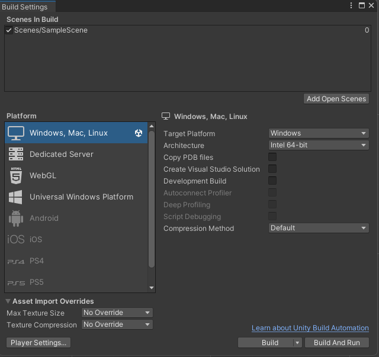

There are multiple ways that you can communicate Tames projects. The recommended way is to use bundles and Folly Hub as explained at the bottom of this page.
It is not recommended to get used to sending and receiving the source of your Tames project, unless you trust the other people. The reason is simple: the source of a project is an executable application with almost full access to your computer. Nevertheless, if you wish to do this, the best way is probably to create a ZIP archive of your project's files (not its root folder) and send it to the other person. Please note that you do not need (and better not) to include the folder Library in the ZIP file because it is too big and Unity will anyway create it on the receiver's end.
After receiving the project's ZIP file, you unzip it and add it normally on Unity Hub. Please mind how you unzip a project (because the project was zipped with tens of files in its root folder; so you need to create a folder for it before or on unzipping).
A standalone executable project means that you do not need any other applications (e.g., Unity or Folly Hub) to make the project work. It will be run on your computer the way any other application does. Similar to the project source it is unsafe to use this mode, unless you trust the producer of the app and project.
You can build you project for different operating systems (Windows, MacOS and Linux) that do not usually reliant on touchscreen input but mouse and keyboard (so, Tames projects cannot be built for Android and iOS). To build a project, you need to open the Build Settings from Unity's File menu. You select the operation system in Target Platform field and then click Build or Build And Run. If the Platform has not been set on Windows, Mac, Linux, you need to select it first and click on Switch Platform that will be in place of Build button. Please wait for a few seconds for Unity to switch the platform. Please note that you need to have Linux and Mac modules added to your Unity Editor to be able to build for these platforms (see Add Modules on Unity's website).

If you wish your project to be playable in a browser, you need to build it for WebGL platform. For this purpose, after opening Build Settings from the File menu, make sure WebGL is selected in the Platforms list. If it hasn't been selected earlier, you need to click on Switch Platform button and wait for Unity to switch the platform. Then, click Build or Build And Run. Please note that you cannot play a WebGL build that is not located online. So, if you just Build your project, you cannot test it unless you first upload it on a server (for example, itch.io). However, you can test the project with Build And Run
Because of security reasons and coding complexities (read "yours truly's lack of skills" :)), some features of Tames will not be available in WebGL mode. These include voice commands, VR and multiuser features. Some other things that you'd like to remember:A bundle or asset bundle is a package made of the contents in the project, including everything that is used in the opened Scene. Bundles are commonly used to create custom or updated contents in video games. While they can include every sort of code, only the codes will run which are already included in the application that opens them. This is why they are relatively safe compared to the source and standalone builds because they are opened by Folly Hub versions.
To create a bundle please see Publish Project. After creating a bundle, Tames will ask you to select a destination to save it as a ZIP file. You can then send this ZIP file to everyone who has Folly Hub on their computer.